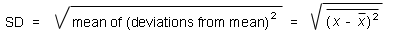

Definition Of The Standard Deviation
The SD is a measure of how far the individual data points
(measurement values) scatter around the mean of the distribution. The
greater the SD, the more spread-out the data are. This is reflected in
the general definition of the SD:

Comments.
- The symbolic expression on the right assumes that we are talking
about the standard deviation of a quantity x.
- The mean of a quantity is indicated by a bar over the quantity. So,
the mean of the quantity x is indicated by
 .
.
- In this definition, the mean
and the mean of the squared deviations from the mean are means over the distribution of
infinitely many measurement values of the quantity x. These
"true means" are not known if one has a finite set of, say, five
measurement values, a so-called sample of the distribution.
From such a sample one can only calculate sample means. (See
Page 8.) The definition of the SD above is important theoretically,
but cannot be used in practice.
- The SD is also known as rms-deviation. "rms" stands for
"root-mean-square". You will be able to understand this name when you
look at the expression above.
- The reason the deviations are squared in this definition is that
the mean of the deviations themselves, not squared, would be zero
because the deviations from the mean, on average, are equally much
positive as negative. The final square root "corrects" for squaring
the deviations. Also, with the square root in place, the units of the
SD are the same as the units of the quantity that is being measured.
Okay, now that the SD has been defined, how does one actually
calculate it, or, more exactly, get a best estimate for it, given a
sample of measurement values? Please go on to Pages 8 to 11 to find
out. It will also be explained how to get a best estimate for the
mean of the distribution and the
standard deviation of the mean.